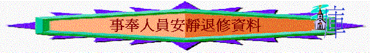

[ 聚會資源 ]
學習摩西來到神的跟前
一.唱詩
二.默想文章：摩西的四十晝夜
當 神拯救以色列民離開埃及後，摩西面前的主要工作是要建立選民成為聖潔的群體，並且建立神聖的會幕，但在未開始建立之先，摩西的人生經歷了二次非常特別的【四十晝夜】，若我們仔細留意，會發現很多寶貴的真理，是我們今日一班事奉人員美好的榜樣，究竟摩西在四十日有什麼值得我們效法？主要有三方面的事情。
１．四十晝夜上山親近 神
『耶和華對摩西說，你和亞倫、拿答、亞比戶，並以色列長老中的七十人，都要上到我這�堥荂A遠遠的下拜，惟獨你可以親近耶和華．．．．』出24:1-2
神的心意是要摩西先上山親近 神，然後才將前面建會幕的工作，及指示交托他。的確，一個事奉的人，若不先親近 神，他很難會明白 神的旨示， 神的心意，更談不上能建立合 神心意的工程，但很可惜，今日許多基督徒卻不願意將「親近主」放在一天的首位。
不是他們不知道「離了主，便不能作什麼」之真理，也不是不知道「親近 神與我有益」之經文，他們知道。但在現實生活，實在太忙，有很多工作要面對，很難捨得完全放低，但摩西卻願意，其實在他的時代中，他每日都要面對很多爭訟的事件，面對百多萬選民的事務，他也有他的家庭、兒子要照顧，但他卻完全放低，照 神的吩咐上山，而且不是短時間的上山，聖經說是用「四十晝夜」，不是用
我們又如何呢？我們願不願意用時間去親近主呢？若果一個事奉人用了很多心機、精神，忙碌在事工上，但他的靈修生活很不理想，很少願意每日用時間親近主，覺得用十五分鍾己經算理想，他的事奉仍未最美，因為「親近 神」才是最基本，最合 神心意的事奉之一，連此項甘甜之工作也不能作好，更談不上日後 神所交托之偉大工程。不知我們今天親近神的生活又如何？有進步還是退步了嗎？是優質還是因循？
２．四十晝夜等候 神的話
『我上了山，要領受兩塊石版，就是耶和華與你們立約的版，那時我在山上住了四十晝夜，沒有吃飯，也沒有喝水。』 申9:9
摩西除了親近 神外，他最主要的目的，是要領受 神的話語，因為 神的心意不是要摩西靠自己的方法，自己的計劃，自己的智慧去建立會幕，完全不是！乃是要照 神在山上的吩咐，山上的話語而建。
事奉也是一樣，可能我們在下年度都有不同的事奉崗位，各人滿腦袋都有不同的「全年大計」「部門工作」但最重要的是我們心�埵釣S有「領受 神的話語」，清不清楚 神在我�堶悸漲垠t與領受，摩西清楚了，所以他可以放膽，只管依著 神的吩咐去做，而我們究竟清楚了沒有？
我多年前在一個令會中，聽一位事奉 神的僕人之分享，到現在仍然深刻，原來他每日未開始一日事奉之先，他必會做一件事情，就是來到神面前屈膝，如一張白紙，求問 神：「 神啊，今日你在我身上有什麼旨意、工作？」他每日都會這樣求問。美好的事奉就是這樣，不是靠自己意思，而是靠上帝的話及聖經真理的籃圖，摩西也用了四十晝夜時間專心等候神的話，我們又如何？有沒有每天等候及細讀上帝的話，每星期崇拜中，我們又是否有美好的心田，有最好的精神領受主的話？我們靠上帝的話事奉，還是靠自己的理想與經驗呢？在每一次開會及預備聚會中，有沒有上帝的話語？我最上一次感受到神真是對我說話，是那段時候？
３．四十晝夜為百姓代求
『我因耶和華說要滅絕你們，就在耶和華面前照舊俯伏四十晝夜。』申9:25
當摩西上山等候 神話語之時間，以色列民出現了一件危機，就是在山下拜金牛犢，惹動 神的怒氣， 神要滅絕他們；在這危機中，作為事奉 神的僕人∼摩西，他可以作什麼呢？哭泣？叫以色列民逃走，逃避 神，自己想方法解決這危機？完全不是！他只作了一件事情，就是照舊在 神面前俯伏四十晝夜，目的只有一個，為百姓代求。
他所能作的只有這樣，亦只有這才是最有效的方法。結果 神真是應允了他。在建立 神的家之先，可能我們在團契�堙A在教會中，看到很多危機，很多問題，有時很想用許多方法即時去解決。但記著最好的方法就像摩西一樣「為他們代求，」要相信禱告！有時一個代求勝過靠自己埋頭苦幹做十件工作。
記得有一次，我在辦公室思索「怎樣去帶領團契」自己深察到在團契�埵�乎做不到很多事情，沒什麼用途，有很多理想仍沒做到，心�媔}始有點灰心及焦急，這個時候，心�埵雪P動對自己說：「你可以做就是祈禱，為他們代求，原來自己忽略了代求的重要，於是就立刻為約六位不穩定參與團契肢體代禱，很奇怪，當晚團契的聚會中，他們（約六位）竟然完全有出席， 神真是用自己微小的代禱，代禱真是有果效的。」
所以我們也不可以輕看禱告的重要，即使全年似乎在團契沒有什麼實質的工作可以做到，但最重要的還是問自己，我有沒有花時間為團友，為教會祈禱呢？摩西很捨得用四十晝夜為百姓代求，我們又如何呢？願不願意每日用小小時間為兩三位肢體祈禱，願不願意每個星期只抽一兩小時來到教會祈禱會為肢體代禱。
作為一個事奉者，君尊的祭司，未談什麼宏偉的工程之先，我們必須好像摩西一樣，先看重親近 神，等候 神的話，為人代求，這樣我們的事奉才有能力，才蒙 神悅納。
∼試默想以上內容，文章對你有什麼提醒？以上三方面，你在那方面學得最好？那方面需要改善？
∼與你旁聽的肢體(3人一組)分享你的得著
三.唱詩
四.靜中禱告—來到主跟前全然俯伏
1.為神的榮耀而全然俯伏
默想經文:
「摩西亞倫進入會幕、又出來為百姓祝福、耶和華的榮光就向眾民顯現。有火從耶和華面前出來、在壇上燒盡燔祭、和脂油．眾民一見、就都歡呼、俯伏在地。」利9:23-24
∼摩西與百姓看見神的榮光與作為後，就都歡呼、俯伏在地。我最近在生活及事奉中，看不看到神的榮耀與作為？
∼即或在艱難中，我又看見神的同在與神施恩的手幫助嗎？
∼我最近認識這位神有多深？
2.為面對的艱難而全然俯伏
默想經文:
「利未的曾孫、哥轄的孫子、以斯哈的兒子可拉、和流便子孫中以利押的兒子大坍、亞比蘭、與比勒的兒子安、並以色列會中的二百五十個首領、就是有名望選入會中的人、在摩西面前一同起來。聚集攻擊摩西、亞倫、說、你們擅自專權、全會眾個個既是聖潔、耶和華也在他們中間、你們為甚麼自高超過耶和華的會眾呢。摩西聽見這話就俯伏在地、對可拉和他一黨的人說、到了早晨、耶和華必指示誰是屬他的、誰是聖潔的、就叫誰親近他、他所揀選的是誰、必叫誰親近他。」民16:1-4
∼摩西面對百姓攻擊時，他就俯伏在地仰望神的工作，在你的生活、家庭、工作、事奉中又會否遇到攻擊、壓力、挑戰或艱難呢？ 甚至自己感力不能勝？
∼你內心又有否不開心的事？
＃將自己的面對種種的艱難交給神，向神傾心吐意，也求神幫助及指引自己如何面對！
3.為自己與肢體的軟弱而全然俯伏
默想經文:
「耶和華吩咐摩西說、你們離開這會眾、我好在轉眼之間把他們滅絕．他們二人就俯伏於地。摩西對亞倫說、拿你的香爐、把壇上的火盛在其中、又加上香、快快帶到會眾那裡、為他們贖罪、因為有忿怒從耶和華那裡出來、瘟疫已經發作了。」民16:44-46路
6:12-13
∼我最近的生活中，有什麼事情是惹神發怒的？
∼我的內心有否不潔的事情？
∼我的品性又如何？是否神喜悅？
∼在事奉中又是否有美好的榜樣與持守？
∼我在守望中，有沒有發現一些肢體有軟弱及作了神不喜悅的事？
五.唱詩
六.分組分享領受與祈禱
[ 聚會資源 ]